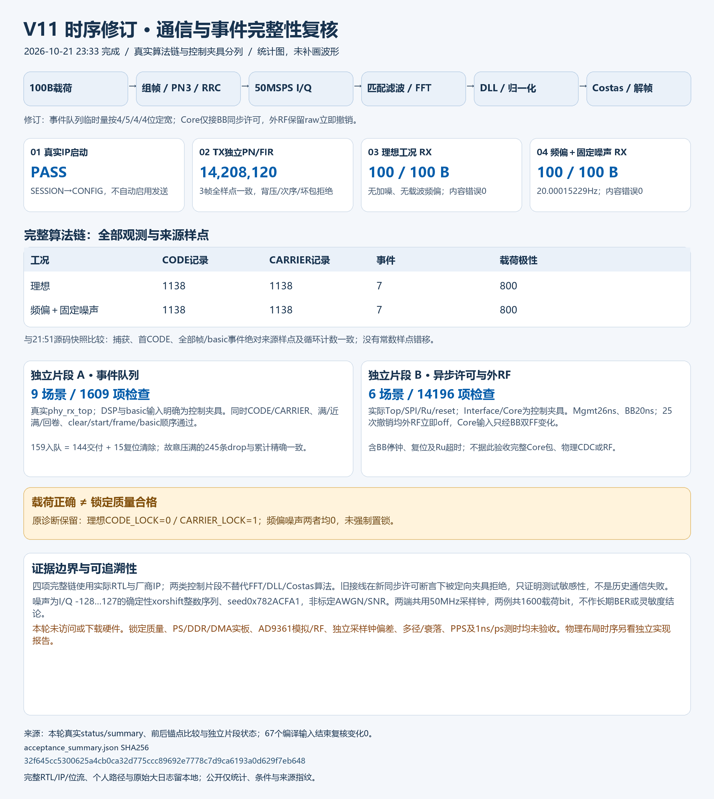

← 图册 · 模块与来源
V11时序修订：数字通信与事件顺序复核
完整实际算法链与控制夹具分列；无实板下载/访问，不代替物理时序、PS-DDR、RF或1ns验收。
脱敏统计与SHA · 原图

时序修订源码的完整数字通信与事件顺序复核
实际完整RTL/IP四项通过：Top启动；TX3帧14,208,120有效样点独立PN/FIR逐点一致；理想及20.00015229Hz载波频偏＋固定有界整数噪声两工况实际匹配滤波/FFT/IFFT/DLL/归一化/Costas/解帧各100B正确。每例1138CODE、1138CARRIER、7事件、800载荷极性记录。与21:51修订前快照的捕获、首CODE、全部帧/basic事件绝对来源样点和周期一致。
改动仅两处：phy_rx_top队列临时量定宽与32bit累计零扩展；Top中Core许可只用BB双FF同步值，外部RF仍保留raw管理许可的立即撤销。AD9361_SPI已有的status每bit双FF未再修改。
独立事件片段使用真实phy_rx_top，DSP/basic输入为CONTROL_STUBS；9场景1609检查，旧/新覆盖及结果一致，故意饱和丢弃245条精确累计。独立许可片段用实际Top/SPI/Ru/reset，Interface/Core为CONTROL_STUBS；6场景14196检查，Mgmt26ns/BB20ns下25次raw撤销均外RF立即off，Core输入只按双FF变化，含停BB钟/reset/Ru超时。旧rawAND接线在新Core同步输入约定断言下按预期拒绝，仅证明夹具敏感性，不是历史RF通信失败。
两工况共用50MHz仿真采样钟，50MSPS、12.5Mchip/s、PN1000；噪声I/Q各-128..127、seed0x782ACFA1，不是标定AWGN/SNR。仅1600载荷bit，不作长期BER/灵敏度结论。原锁定位保留：两工况CODE_LOCK=0，理想CARRIER_LOCK=1、频偏噪声CARRIER_LOCK=0，质量未验收。
本轮未访问或下载硬件；实板PS/DDR/DMA、AD9361模拟/RF、独立采样钟偏差、多径、PPS和1ns/ps精度均未验收。物理布局时序请看独立实现报告，不由本图推断。仅公开此统计图、短说明、脱敏JSON与SHA；完整项目/私有RTL/IP/位流/个人路径和原始大日志不公开。
来源SHA256：
status.json 2e000e8d26020a9337a6f7ef4ad82e31f999a036b2234314c1d63ab57f8cba0c
acceptance_summary.json 32f645cc5300625a4cb0ca32d775ccc89692e7778c7d9ca6193a0d629f7eb648
run_provenance.json 023fc666ff9ee79d125d9b1249291768a0df772fa20479f299b03a69096d85ce
comparison_to_clockrelay.json 944b2359490bf0caf4c00de9772a6dd5fb8413c5249de7245e0e8377853ba3a1
directed_comparison.json f9c84a05c307edf7e44c7151519d52b4e5e9e78f2f944036efe447da9f277015
event_order_guarded/status.json 3887ae028fa0ed7219c36ddfb0daab8f26188ff728fb4647d78b36867d5951ee
top_permit_guarded/status.json b2c7c08506a16facdbae0b2e645c2a3e3575e94976674abd75b02433155d875c
plot_timingclosure_acceptance_summary.py b438c94503be60e007b458fcc63390cd7fb805664efdb6982d9107a14b62d2ff
PNG 0b8af396571fb5dc2492138212176a8e406c60b0df50ea804c9b4bf48f7b6b35